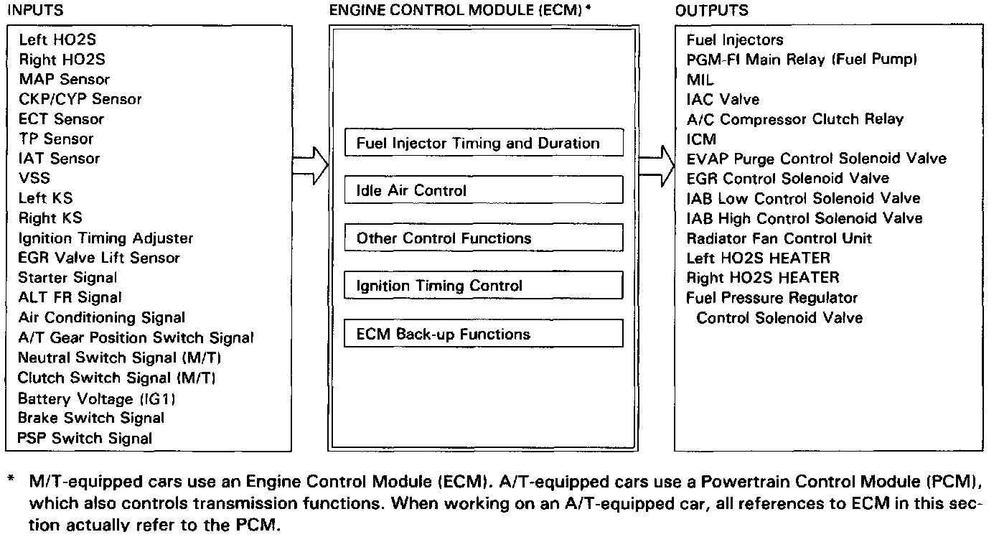

Other Control Functions
PGM-FI System Description:

STARTING CONTROL
When the engine is started, the Engine Control Module (ECM) provides a rich mixture by increasing fuel injector duration.
FUEL PUMP CONTROL
^ When the ignition switch is initially turned on, the ECM supplies ground to the main relay which supplies current to the fuel pump for two seconds to pressurize the fuel system.
^ When the engine running, the ECM supplies ground to the main relay which supplies current to the fuel pump.
^ When the engine is not running and the ignition is on, the ECM cuts ground to the main relay which cuts current to the fuel pump.
FUEL CUT-OFF CONTROL
^ During deceleration with the throttle valve closed, current to the injectors is cut off to improve fuel economy at speeds over 1,050 rpm (M/T) or 1,000 rpm (A/T).
^ Fuel cut-off action also takes place when engine speed exceeds 6,900 rpm regardless of the position of the throttle valve to protect the engine from over-running.
INTAKE AIR BYPASS CONTROL
The ECM controls the flow of air through the intake path and directs the air through a long path with a chamber at low rpm to increase low-end torque, a mid length path at the middle rpm for mid range torque improvement and a short path at high rpm to increase torque at top end.
EVAPORATIVE EMISSION (EVAP) PURGE CONTROL
When the engine coolant temperature is below 70° C (158° F) and air conditioner off, the ECM supplies a ground to the EVAP purge control system.
A/C COMPRESSOR CLUTCH RELAY
When the ECM receives a demand for cooling from the air conditioning system (compressor control unit), it delays the compressor from being energized, and enriches the fuel mixture to assure smooth transition to the A/C mode.
EXHAUST GAS RECIRCULATION (EGR) CONTROL SOLENOID VALVE
When the EGR is required for control of oxides of nitrogen (NOx) emissions, the ECM controls the EGR control solenoid valve which supplies regulated vacuum to EGR valve.
FUEL PRESSURE REGULATOR CONTROL
During hot starting or high intake air temperature conditions, the ECM commands vacuum to be removed from the Fuel Pressure Regulator for about 80 seconds, to boost fuel pressure.
PULSED SECONDARY AIR (PAIR) CONTROL
Extra air can be directed into the exhaust manifold by the PAIR system, under the control of the ECM.